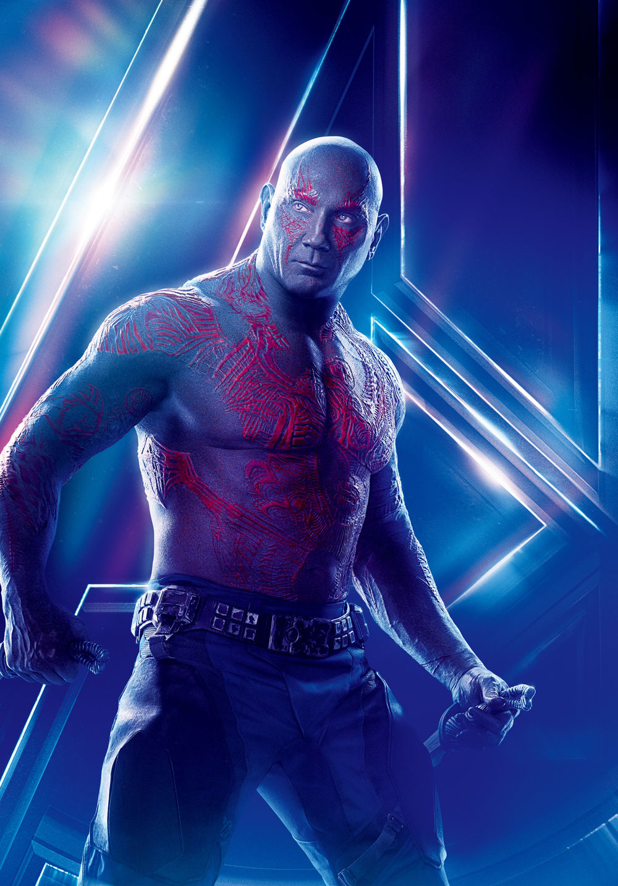

A former intergalactic criminal and a member of the Guardians of the Galaxy. He sought revenge on Ronan the Accuser for killing his wife and daughter, and went on a rampage across the galaxy, ending with him being imprisoned by the Nova Corps in the Kyln. There Drax became uneasy allies with Star-Lord, Gamora, Rocket Raccoon, and Groot. Together they broke out of the Kyln and became embroiled in the Quest for the Orb. After the Battle of Xandar, in which he finally exacted his vengeance on Ronan, Drax left Xandar with the other Guardians but not before declaring Thanos as his next target. Following the Guardians, Drax assisted in killing the Abilisk for the Sovereign people, only for Rocket Raccoon to betray them. Drax followed the Guardians as they encountered Ego, the long lost father of Star-Lord. Along the way he developed a close bond with Mantis, who soon revealed that Ego's true plan was to destroy and rebuild the entire universe. Drax and his fellow Guardians defeated Ego, saving the galaxy once more but at the cost of Yondu Udonta's self-sacrifice. Four years later, the Guardian of the Galaxy joined up with Thor and the Avengers in trying to stop Thanos from obtaining the Infinity Stones. When Thanos gathered all of the stones, he used them to eradicate half the universe's population, including Drax and the Guardians, except Rocket Raccoon and Nebula.
If you overwork it you become a cloud killer. There's nothing worse than a cloud killer. You can bend rivers. But when I get home, the only thing I have power over is the garbage. If you hypnotize it, it will go away. Look at them little rascals. Let's do that again. A tree cannot be straight if it has a crooked trunk. By now you should be quite happy about what's happening here. Automatically, all of these beautiful, beautiful things will happen. This is your world, whatever makes you happy you can put in it. Go crazy. Have fun with it. Didn't you know you had that much power? You can move mountains. You can do anything. See how easy it is to create a little tree right in your world. We start with a vision in our heart, and we put it on canvas. All you have to do is let your imagination go wild. If I paint something, I don't want to have to explain what it is. Learn when to stop. We have all at one time or another mixed some mud. Any little thing can be your friend if you let it be.